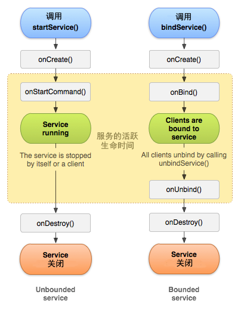

Android-Service
Service是Android中实现程序后台运行的解决方案，适用于去执行那些不需要和用户交互而且还要求长期运行的任务
创建Service
创建一个MyService类继承自Service，并重写onBind()方法
1 | public class MyService2 extends Service { |
在清单文件中注册Service类
android:exported; 是否允许其他应用隐式调用该组件
android:enabled; 是否可以被系统实例化1
2
3
4
5<service
android:name=".MyService2"
android:enabled="true"
android:exported="true">
</service>
Service生命周期
1 | //启动服务 |

1 | import android.app.Service; |
启动Service
通过startService()启动
启动状态：
当应用组件通过调用startService()启动服务时，服务即处于“启动”状态。一旦启动，服务即可在后台无期限运行，即使启动服务的组件已被销毁也不受影响，除非手动调用才能停止服务，已启动的服务通常是执行单一操作，而且不会将结果返回给调用方
- 启动时，依次调用onCreate -> onStartCommand
- 如果Service已经被启动，再次启动时将不会执行onCreate，而是直接执行onStartCommand
- stopService时直接进入onDestory
- 无论调用了几次startService，一次stopService就能结束该Service
1 | Intent intent = new Intent(MyService.this,MyService2.class); |
通过bindService()启动
绑定状态：
当应用组件通过调用bindService()启动服务时，服务即处于“绑定”状态。绑定服务提供了一个端口—服务器接口，允许组件与服务进行交互、发送请求、获取结果，甚至是利用进程间通信跨进程执行这些操作。仅当与另一个应用组件绑定时，绑定服务才会运行。多个组件可以同时绑定到该服务，但全部取消绑定时，该服务即会销毁
- 启动时只运行onCreate()
- 停止时，依次调用onUnbind -> onDestory
- 当与之绑定的Activity被销毁时自动解绑Service
Activity与Service绑定需要实例化一个ServiceConnection坐桥梁1
2
3
4
5
6
7
8
9
10
11
12
13
14// 通过一个桥梁给Activity和Service进行绑定
ServiceConnection serviceConnection = new ServiceConnection() {
// 传送在service的onBind()中返回的IBinder
public void onServiceConnected(ComponentName name, IBinder service) {
}
// Service被不正常kill时调用
public void onServiceDisconnected(ComponentName name) {
}
};
绑定Service1
2
3
4
5// 绑定服务，传入 intent、ServiceConnection、绑定模式
bindService(intent, serviceConnection, Context.BIND_AUTO_CREATE);
// 解绑服务
unbindService(serviceConnection);